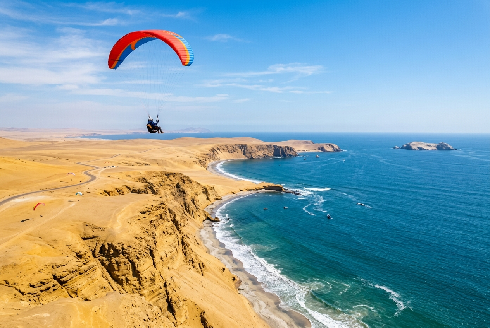

Detalles de la Aventura
Volar en parapente en Paracas es una de las experiencias de aventura más impresionantes de la costa peruana. Se realiza en modalidad tándem (biplaza), acompañado en todo momento de un piloto instructor certificado por la APVL.
Despegamos desde los altos acantilados de la Reserva, en puntos como Playa Supay o el Cerro Mirador, donde el viento marino constante de Paracas eleva el parapente suavemente sobre el contraste único del desierto y el mar.
No necesitas entrenamiento previo ni "saltar al vacío": el inflado del parapente es progresivo y el despegue se siente como empezar a flotar desde el suelo. A los pocos segundos ya estarás planeando con vista a toda la bahía.
Detalles del vuelo en parapente
-
account_circle
Piloto Instructor
Vuelas acoplado a un piloto profesional certificado por la APVL (Asociación Peruana de Vuelo Libre).
-
video_camera_back
Video HD Incluido
Te grabamos en video de alta definición con una cámara de acción GoPro durante el vuelo para tu recuerdo.
-
wind_power
Vuelo de 10-15 Minutos
Tiempo de vuelo suspendido en el aire aprovechando las corrientes térmicas y el viento costero.
-
explore
Vistas Espectaculares
Contempla la bahía, las dunas, el mar y los impresionantes acantilados desérticos desde las alturas.
Preguntas Frecuentes
¿Cuánto cuesta volar en parapente en Paracas?
El vuelo tándem cuesta S/ 250 por persona e incluye piloto certificado, equipo de seguridad completo, video GoPro de tu vuelo y traslado al punto de despegue. Solo se paga aparte la entrada a la Reserva (S/ 11).
¿Cuánto dura el vuelo?
El vuelo dura entre 10 y 15 minutos según las condiciones de viento, más el tiempo de preparación y la charla de seguridad. La experiencia completa toma alrededor de 1 hora.
¿Necesito experiencia para volar?
Ninguna. El piloto se encarga de todo el control del parapente. Tú solo debes seguir sus indicaciones básicas: correr unos pasos en el despegue y levantar las piernas al aterrizar.
¿Da miedo o produce vértigo?
Menos de lo que imaginas. No hay caída libre ni giros bruscos: el vuelo es suave y estable, como estar sentado en una silla flotante. La mayoría de pasajeros se relaja a los pocos segundos y hasta pide acrobacias al final.
¿Hay límites de edad o peso?
El peso del pasajero debe estar entre 40 kg y 90 kg por seguridad. Los menores de edad pueden volar con autorización escrita de sus padres.
¿Qué pasa si no hay viento el día programado?
El vuelo libre depende del viento. Si es insuficiente o muy fuerte, esperamos a que mejore dentro de la ventana de la tarde o reprogramamos la actividad sin costo para garantizar tu seguridad.
¿Qué ropa debo llevar?
Ropa cómoda de manga larga, pantalón largo y zapatillas cerradas bien ajustadas. Nosotros ponemos el casco y el arnés. Si llevas celular, debe ir bien asegurado o dejarlo con nuestro equipo en tierra.
Reservar Tour
S/ 250
Por persona
- check_circle Vuelo biplaza con piloto instructor certificado
- check_circle Uso de casco e insumos de seguridad
- check_circle Video grabado en alta definición con GoPro (traer tarjeta MicroSD o celular)
- check_circle Traslado ida y vuelta al punto de despegue en la Reserva
- error Boleto de ingreso a la Reserva Nacional (S/ 11.00)
* El vuelo está sujeto a condiciones óptimas de viento. Típicamente se realiza entre la 1:00 PM y las 5:00 PM.
Por qué elegir SolyMar Paracas
Seguridad Garantizada
Equipos modernos y guías certificados con seguros de pasajeros para tu tranquilidad.
Guía Local Experto
Guías nativos bilingües que te mostrarán los secretos mejor guardados de la Reserva.
Agencia Registrada
Somos operadores turísticos formales autorizados por las entidades pertinentes del Perú.
Atención Personalizada
Coordinamos tu reserva por WhatsApp de inmediato resolviendo cualquier consulta.
¿Listo para comenzar tu aventura?
Contáctanos hoy mismo para asegurar tus espacios en esta maravillosa experiencia. ¡Tenemos salidas diarias!
Contactar por WhatsApp